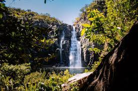

O cerrado brasileiro o segundo maior bioma do país, com várias biodiversidade, um gigantesco sistema mosaico de vegetação desde as formações florestais, onde adensam as árvores e arbustos, passando pelas formações savânicas, contendo árvores e arbustos de pequeno porte entremeadas por herbáceas, até as formações campestres, onde dominam as plantas herbáceas
PRINCIPAIS BIOMAS BRASILEIRO
O Cerrado ocupa 1/4 de todo o território brasileiro!
Atualmente o Cerrado compreende cerca de 22% do território brasileiro. Caracteriza-se por ser uma região de savana, estendendo-se por cerca de 200 milhões de quilômetros quadrados. Possui uma formação vegetal de grande biodiversidade e grande potencial aquífero.
VEGETAÇÃO
A vegetação do Cerrado e sua densidade, entretanto, não dependem do grau de pluviosidade, como ocorre nas savanas da África, mas sim de fatores edáficos (fertilidade, teor de alumínio e grau de saturação do solo) e modificações pelo fogo e corte. A vegetação principal do Cerrado é a do cerrado sensu lato, que cobre cerca de 85% da área total. O restante da província do Cerrado é ocupado pelos outros tipos de vegetação e também por corpos d'água.
AMBIENTES AQUÁTICOS
No cerrado há também uma série de ambientes aquáticos, como nascentes, lagoas efêmeras e ambientes brejosos (buritizais e veredas), assim como rios e riachos, formadores das principais bacias hidrográficas do Brasil.
Na sua área nuclear situam-se os Domínios do Paraná, Amazônico e do Leste do Brasil. As bacias hidrográficas apresentam uma biota diversificada e rica em invertebrados e vertebrados aquáticos,  entretanto grande parte ainda não é totalmente conhecida. Todas essas bacias hidrográficas apresentam uma biota característica. O à ictiofauna, as espécies que ocorrem nas cabeceiras têm relações mais estreitas com a da própria bacia à jusante do que com a de cabeceiras de outras bacias. Entretanto, nas áreas em que há conexões entre as bacias ("Águas Emendadas") pode haver troca entre a ictiofauna de cada uma.
DESMATAMENTO
O desmatamento no cerrado é algum precursor sério que só vem crescendo a cada ano, que já devastou mais da metade de todo o território original.
ﾠﾠﾠﾠﾠﾠﾠﾠﾠ
O cerrado vem sofrendo um grande aravamento de seu ecossistema, principalmente nas útlimas décadas. De acordo com o Instituto Brasileiro de Geografia e Estatística (IBGE), entre 2001 e 2019, o cerrado perdeu mais de 157 mil km² de área verde. Isso representa cerca de 18% de toda a vegetação do bioma. As principais causas do desmatamento no cerrado são a expansão da agricultura, a pecuária e a construção de rodovias e ferrovias. Com a finalidade de criar pastagens para a produção de gado, há uma grande remoção da vegetação do cerrado, o que não só afeta o habitat dos animais nativos, mas também reduz a capacidade do bioma de reter água e portanto, aumenta a intensidade e frequência de secas
Mudanças Climaticas
Tanto no cerrado quanto nos outros biomas, quanto mais desmata, mais emissão de gases de efeito estufa, mais calor, mais queimadas, mais ocorrências de incidentes naturais com chuvas intensas em curto espaço de tempo, ventos extremos em locais que jamais ocorreram, como em Santa Catarina no primeiro semestre deste ano.
Ao queimar a vegetação, são novamente liberados gases do efeito estufa na atmosfera, e potencializando as mudanças climáticas, que por sua vez causam aumento de temperatura e clima mais seco em diversas regiões do mundo
Consequências do Desmatamento
Gráfico elaborado com dados do Prodes – Inpe.
Desequilíbrio ambiental, afetando a falna e a flora, organismos e populações que vivem na área de cobertura desse bioma.
Morte de animais e plantas, o que pode levar muitas espécies à extinção e provocar a perda da biodiversidade do Cerrado, que é a terceira maior do Brasil.
Maior suscetibilidade dos solos à erosão, fragilizando a sua estrutura, e à lixiviação.
Poluição dos solos e dos corpos hídricos (rios e aquíferos), o que se deve também ao aumento da atividade agropecuária.
Poluição atmosférica pelo menor retenção de carbono e pelas queimadas provocadas pela ação humana.
Extinção de nascentes (ou cabeceiras) de rios e menos recarga dos aquíferos.


 ﾠﾠﾠ
ﾠﾠﾠ ﾠﾠﾠ
ﾠﾠﾠ ﾠﾠﾠ
ﾠﾠﾠ